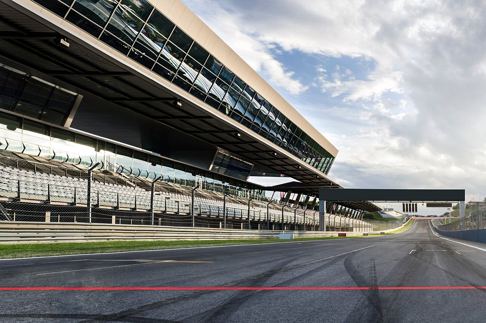
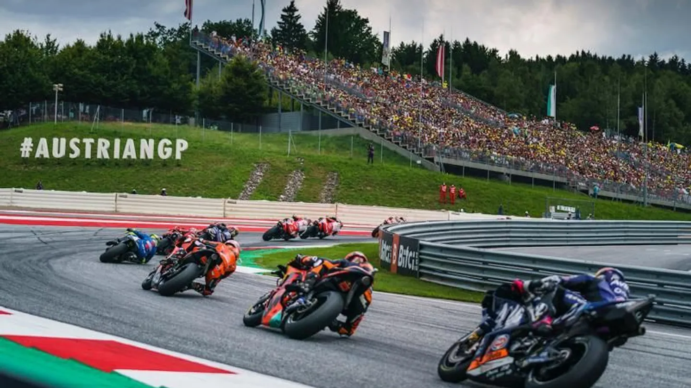

Información Básica
- Longitud: 4300 m
- Anchura: 12 m
- Fecha: 2025-08-17
- Hora: 14:00:00
- Vueltas: 28
- Localidad Próxima: Zeltweg
- País: Austria
- Patrocinador Principal: Bwin
Bibliografía
Fotografía


Multimedia
Vencedor
Nombre: Marc Márquez, Tiempo:42:11.006
Clasificación
| Puesto | Nombre | Puntos |
|---|---|---|
| 1 | Marc Márquez | 545 |
| 2 | Álex Márquez | 362 |
| 3 | Francesco Bagnaia | 274 |